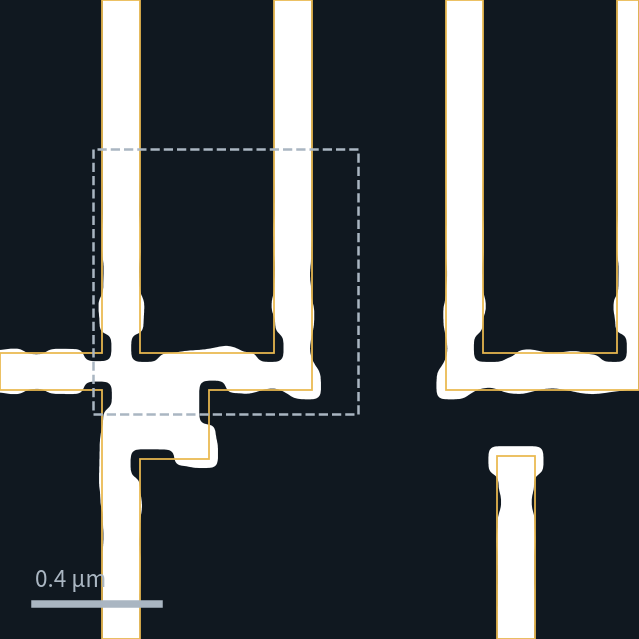
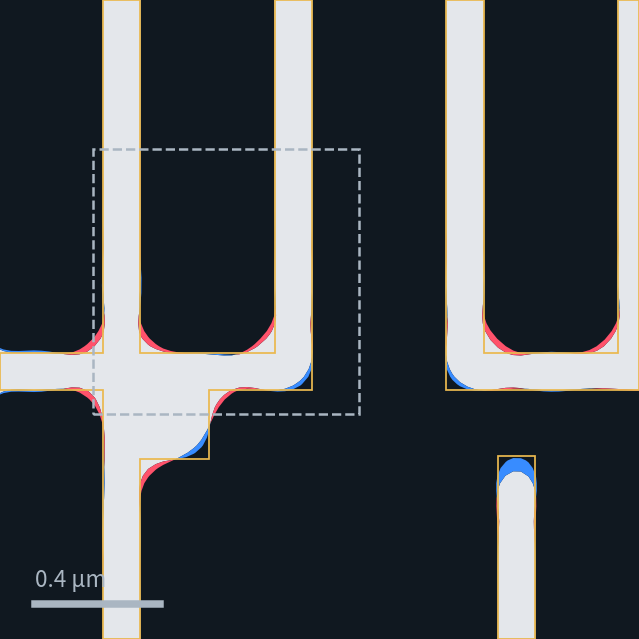
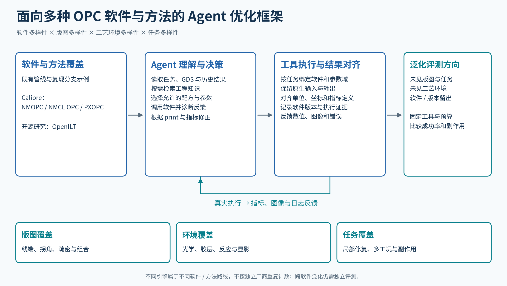
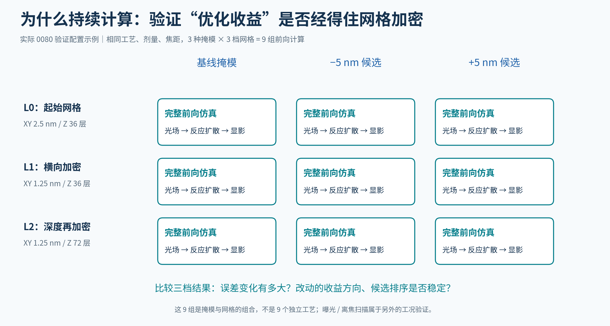
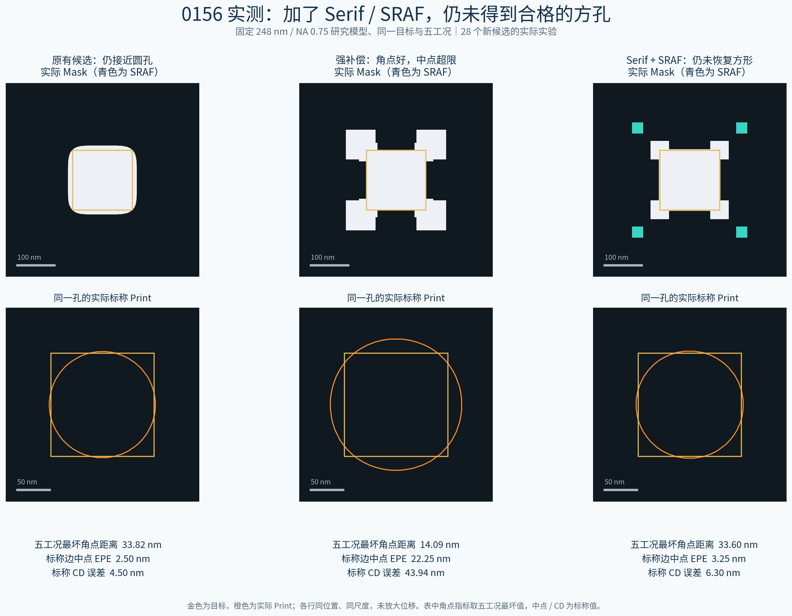

版图多样性
不同图形、尺寸、疏密关系和局部结构组合。


实际 mask 与仿真轮廓 · 红蓝表示增减，优劣需结合目标判断
Agent 通过 ReAct 式交互，观察、决策、调用工具，再根据结果调整。长程能力来自有效的实验与修正。
难以覆盖客户真实工艺的全部分布时，尽可能拓宽版图与环境覆盖；同时以物理约束和验证提高数据质量，逐步缩小与真实场景的距离。
不同图形、尺寸、疏密关系和局部结构组合。
联合构造光学、胶层及过程响应的不同环境。
变化优化意图、关注区域、保护要求和交付形式。
覆盖不同 OPC 引擎、参数接口及优化方式。
既有管线与复现分支涵盖 Calibre 的 NMOPC、NMCL OPC、PXOPC 等路线，以及 OpenILT 开源研究方法。每条任务明确允许的软件、操作范围和验收口径。
多引擎覆盖不等于已经证明跨厂商泛化。后续通过未见软件与版本的留出评测，验证工具适应与迁移能力。

用一次参考优化校准目标难度，也用它暴露的副作用补齐保护要求。
观察结构
确定任务意图
固定工艺
测量原始 R0
测量收益
检查副作用
目标与保护约束
在求解前确定
从 R0 开始
验收完整轨迹
用于内部定标，保障目标有依据。正式 rollout 不提供参考配方或优化答案；有限尝试未找到合格参考的任务，暂缓发布并保留原因。
构造工艺模型，是为掩模修改建立可验证的反馈环境。大量计算最终服务于出题、求解和数据筛选。
联合构造光学、膜层、反应、扩散与显影参数，检查相互关系。
由光强、产酸、酸碱反应与扩散，推导保护率及显影时间。
得到打印图形，计算差异面积、边缘和角部偏差，反馈修改效果。
主要是物理仿真与验证。例如，同一掩模在粗细网格上重复计算，检查“修改后更好”的判断是否稳定，避免把数值误差当作收益。
中间数组用于仿真和复核，模型学习基于 print、指标和反馈解决任务的过程。环境按已验证范围使用，研究验证不能替代材料与晶圆量测。
模型 0080 的一次验证：3 种掩模 × 3 个数值精度设置，共 9 次计算。固定曝光条件，分别细化 XY 网格与 Z 向分层，核对优化方向和排序是否稳定。

同一候选需要同时满足局部、整窗、拓扑及多工况要求，并通过实际图像检查，避免局部改善掩盖其他损伤。
R0 → R1 校准可行性，在正式求解前冻结目标和验收要求。
关键区域、整窗 XOR、过印、欠印、连通性及多个曝光工况联合验收。
同时检查端部、邻近结构和完整轮廓；将试优化中的损伤补充为保护要求。
保留请求、响应、工具调用、图片、失败尝试及真实压缩边界，检查训练转换的内容等价性。
opc-tf5-0001 · 固定工艺的竖向矩形优化。两次实际几何修改，展示从局部达标到看图修正的过程。
请基于附件 target.gds，在固定工艺与模型下优化贯穿1 µm窗口的竖向矩形，参考 R0-printed.png 看图调整全局、组件偏置或局部边缘。以五工况 t11 最坏打印几何 XOR 达到 1875 nm² 为主目标；同时满足 frozen-numeric-caps.json 的全部全局及局部限制，不以主目标改善抵消违例，并保持矩形连通、305 nm宽、长边笔直、端部位置不变，勿改动窗口外空白。
关键区域最坏 XOR 为 2,625 nm²，尚未达到 1,875 nm² 的目标。模型先查看原始 print、固定工况与操作范围。
当前状态 固定原始 R0，尚未执行候选修改。
此处为已完成 rollout 的记录回放。端部调整与指标变化来自同一次真实求解；未做消融实验，不将相关变化解释为已证明的因果效果。候选仍存在残余圆角。
以下是任务附件摘要，不属于上方 Prompt 原文。参数允许范围：全局偏置 −30～30 nm，serif 0～30 nm，组件与全局叠加偏置 −40～40 nm，局部边缘偏置 −15～15 nm。预算：最多 4 个改动候选、40 次模型请求、60 分钟。
全部 16 个固定区域与五工况均有局部及全局上限；不允许图形缺失、新增、分裂、合并。下面仅列整窗上限，单位 nm²，各列须同时满足。
| 工况 / 剂量 / 离焦 | XOR 上限 | 过印上限 | 欠印上限 |
|---|---|---|---|
| NOMINAL / 1.00 / 0 nm | 14,115 | 12,957.5 | 12,510 |
| HP / 1.03 / +30 nm | 16,095 | 15,535 | 12,280 |
| LP / 0.97 / +30 nm | 13,295 | 11,747.5 | 12,685 |
| HN / 1.03 / −30 nm | 19,070 | 18,360 | 12,280 |
| LN / 0.97 / −30 nm | 14,455 | 13,002.5 | 12,780 |
按附件TASK_INTENT.json修矩形左上角及相邻顶、左边，降低圆化与收缩风险；固定工艺模型，结合R0-printed.png看图调参，使固定t20五工况最坏几何XOR≤3200nm²。保护其余角、主体连续性、远端直边及空白，窗口外不动；同一方案须通过附件全部全局、局部限值，不能以主分改善抵消视觉损伤。
该任务 t20 初始最坏 XOR：3,618.75 nm²；目标 ≤3,200 nm²；原始整窗最坏 XOR：27,875 nm²。它与上一个任务的验收阈值分别定义。
0156 是一个指标盲点案例。检查全局图与完整轮廓，才能发现单点 EPE 遗漏的角部圆化。
同一固定工艺下，继续测试 serif、SRAF 等 29 个几何候选，尚未找到同时保持边中点、线宽并明显恢复方形的方案。它作为约束完善和失败诊断的证据。

| 候选 | 五工况最坏角点距离 | 标称边中 EPE | 标称 CD 误差 |
|---|---|---|---|
| 原候选 | 33.82 nm | 2.50 nm | 4.50 nm |
| 强 Serif + 缺口 | 14.09 nm | 22.25 nm | 43.94 nm |
| Serif + SRAF | 33.60 nm | 3.25 nm | 6.30 nm |
强 serif 改善角点距离，却明显损伤中点与线宽；serif + SRAF 仍然圆化，微小数值变化不能视为方形恢复成功。
从初版 rollout 的实际 Trace 中整理修复经验，连接客户内部知识库的使用方式，形成数据与知识共同迭代的闭环。
结构、问题、修复、收益与副作用，关联原始实验依据。
学习何时检索，理解适用范围，结合当前任务应用知识。
结果不符时调整方案；验证后补充、修订知识，再进入 rollout。
Teacher 提出方案 → 环境提供独立反馈 → Agent 多轮实验与修正 → 沉淀优质轨迹和有效知识 → 下一轮学习。
在相同工具与预算下，通过未见版图、未见工艺及知识检索任务，比较成功率、优化收益和副作用，检验能否突破 teacher 单次示范的局限。
网页用于演示，文档用于交流；保留同一套实际图像、任务与指标。